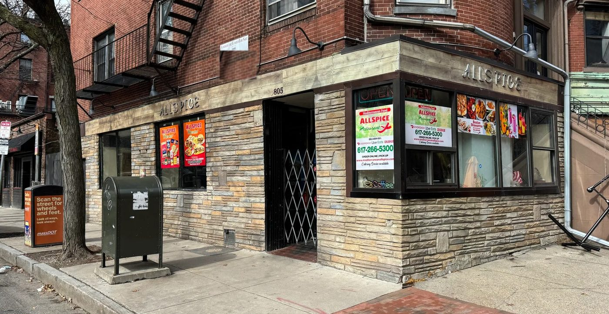
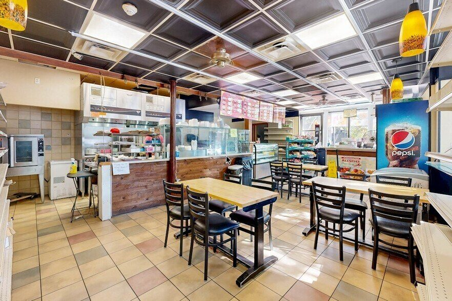
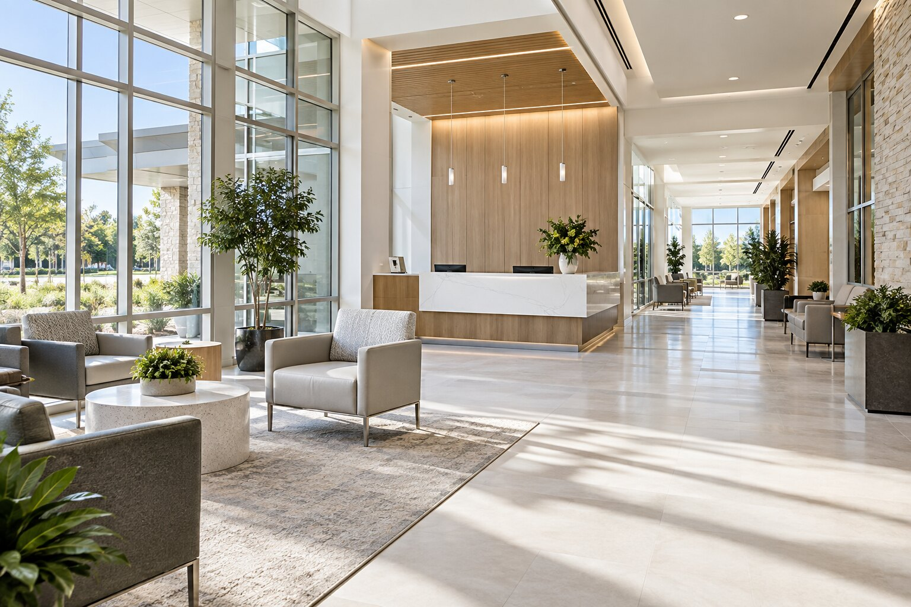

Elija el tipo de propiedad que necesita y luego continúe a la búsqueda segura MLS PIN de Mohammed Morgan para ver listados actuales de Massachusetts, precios, fotos y actividad del mercado.
Inventario actual de MLS — precios, fotos y actividad del mercado — a través de la búsqueda segura MLS de Mohammed Morgan. No necesita una cuenta para explorar.
Un condominio comercial de 1,900 SF listo para restaurante, directamente frente a Boston Medical Center, en el histórico South End de Boston. Se entrega vacante al cierre — sin inquilino, sin espera.


$1,250,000
Múdese y abra — espacio listo para restaurante con tráfico peatonal del hospital.
Adquiera el condominio comercial y arriende el espacio listo para restaurante para generar ingresos.
Estricto: no visite la propiedad ni perturbe el negocio existente. Todas las visitas son estrictamente solo con cita previa.
Listado por Dream Catcher Investment Group Inc. — Mohammed Morgan es REALTOR® de Home For All Realty LLC.
La búsqueda segura MLS le brinda información actual de los listados sin requerir una cuenta. Comience de forma amplia y luego acote los resultados por ciudad, precio, estilo de propiedad, dormitorios y otros criterios.
Busque una ciudad, un pueblo, un código ZIP o una zona del mapa en cualquier lugar de Massachusetts.
Use los filtros de precio mínimo y máximo para enfocar los resultados.
Seleccione el tipo de propiedad, los dormitorios, el estado del listado y otros detalles.
Compare fotos, descripciones e información disponible de las propiedades.
Desde oportunidades residenciales y multifamiliares hasta espacios de salud y comerciales, IEC ayuda a los clientes a conectar la búsqueda de propiedades con una estrategia comercial o de inversión clara.
Viviendas y oportunidades que generan ingresos

Ubicaciones diseñadas en torno a las operaciones y el crecimiento
El trabajo de IEC en bienes raíces abarca los tipos de propiedades que sus clientes realmente operan e invierten — cada uno evaluado frente al negocio que debe respaldar.
Activos de oficinas, de uso mixto y comerciales selectos — evaluados según la solidez de los inquilinos, la demanda del mercado y el potencial de reposicionamiento.
Oportunidades en hoteles y propiedades operativas que requieren una revisión comercial coordinada y operadores con experiencia.
Viviendas y oportunidades residenciales que generan ingresos en todo Massachusetts, con búsqueda en vivo a través de MLS.
IEC evalúa los bienes raíces en el contexto de la operación que deben respaldar. Eso significa mirar más allá del edificio para comprender la demanda del mercado, la solidez del inquilino o del operador, el potencial de expansión, las necesidades de capital y la ruta de la transacción.
Coordinamos oportunidades con corredores con licencia, abogados, prestamistas, arquitectos, ingenieros y otros profesionales cuando se requiere su experiencia.
Consultorios médicos, clínicas especializadas, instalaciones dentales, operaciones ambulatorias y campus de salud.
Revisión integrada cuando un negocio médico o dental y sus bienes raíces se evalúan en conjunto.
Hoteles, complejos de bienestar y oportunidades en propiedades operativas que requieren una revisión comercial coordinada.
Conceptos de bienes raíces para vida independiente de adultos mayores, rehabilitación, recuperación y bienestar.
Oportunidades selectas comerciales, de terrenos, de uso mixto y multifamiliares alineadas con la estrategia del cliente.
Orientación sobre oportunidades en Estados Unidos y coordinación de transacciones para clientes internacionales calificados.
Una ubicación de salud exitosa debe funcionar para los pacientes, los proveedores, el personal y el plan financiero. IEC ayuda a definir y coordinar el requisito completo.

¿La propiedad respalda el modelo operativo, el mercado objetivo y el plan de expansión del cliente?
Coordinar la revisión del precio, los ingresos, los gastos, el capital requerido, los supuestos de financiamiento y el rendimiento potencial.
Evaluar la capacidad, el uso actual, las posibilidades de reposicionamiento y las barreras para la implementación.
Organizar el flujo de información entre el cliente y los profesionales con licencia adecuados.
Desarrollar los términos comerciales, las prioridades y una ruta coordinada hacia una oferta o un acuerdo.
Las propiedades hoteleras y comerciales especializadas exigen conocimiento operativo además de análisis de bienes raíces. IEC ayuda a organizar la oportunidad para compradores, propietarios, operadores y socios estratégicos calificados.
Definir los criterios de la propiedad, buscar en el inventario MLS en vivo, evaluar el ajuste estratégico y coordinar a los profesionales con licencia.
Traducir las necesidades operativas en requisitos de ubicación, acceso, espacio, plazos y finanzas.
Clarificar la historia del negocio, el contexto operativo, el perfil del comprador objetivo y las prioridades de preparación.
Coordinar la orientación al mercado de Estados Unidos, los profesionales locales, el flujo de trabajo de diligencia debida y la comunicación para compradores calificados.
Establecer los criterios de adquisición, arrendamiento, venta o desarrollo.
Identificar oportunidades y probar el ajuste estratégico.
Coordinar los términos, la información y la revisión profesional.
Mantener la comunicación durante la negociación y el cierre.